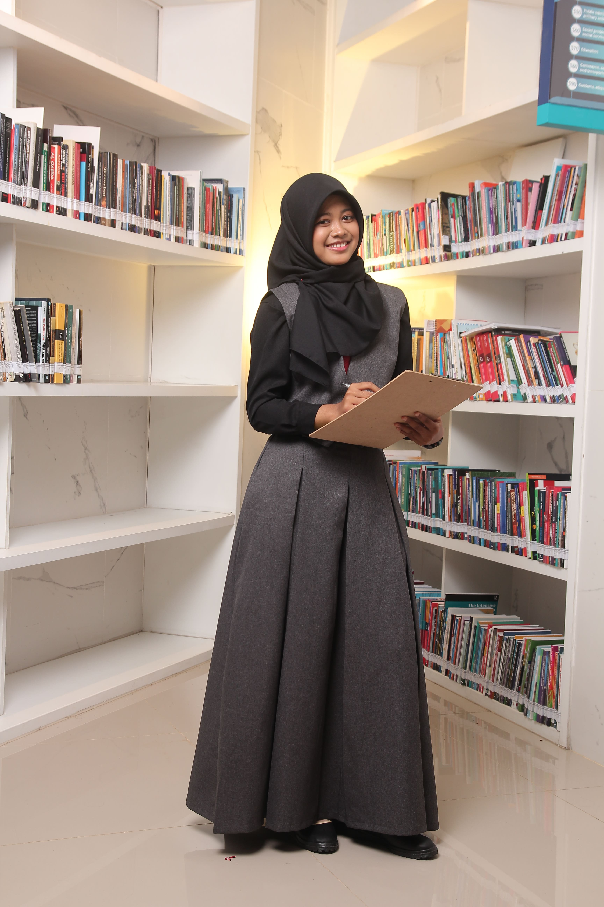
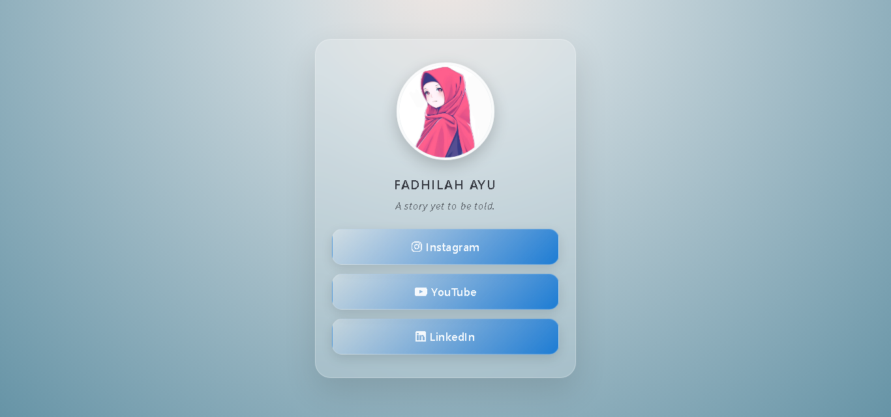

Hello, I'm
Fadhilah Ayu
Informatics Student
Informatics student turning logic into code — and math into something kids enjoy.
- Python
- Math Tutor
- HIMA Secretary 2
- Projects
- 2
- Tutoring Roles
- 2
- Organizations
- 2
- Volunteer & Committee
- 3
About Me
I'm an Informatics student at Universitas Bina Sarana Informatika. I'm building my foundation in Python and web development, with a program that screens for cough and cold, and this portfolio, as projects to show for it.
Outside the classroom, I teach mathematics to small groups of elementary students and serve as Secretary 2 at HIMA Informatika, handling correspondence and official campus email. Both taught me to explain things clearly and to keep details in order.
I'm looking for an internship in the field of Informatics where I can learn, contribute, and grow as a developer.

Education
Universitas Bina Sarana Informatika
Informatics
2025–2029
MAN 1 Bogor
Science Program
2019–2022
Skills
Python
Writing programs with data types, conditionals, loops, and lists.
HTML & CSS
Building responsive, clean web pages from scratch.
Git & GitHub
Publishing projects and collaborating through repositories.
Microsoft Office
Using Word, Excel, and PowerPoint for reports and presentations.
Canva Design
Creating simple visual content and layouts for events and projects.
Teaching
Explaining mathematics to elementary school students.
Communication
Communicating and collaborating with others.
Teamwork
Working together in organizational activities.
Currently Learning
Python OOP
Exploring object-oriented programming — classes, objects, and inheritance.
SQL & Databases
Learning how to design tables and write queries for real data.
UI Design with Figma
Practicing layout and typography to make interfaces feel intuitive.
Projects
Program Diagnosa Penyakit Batuk dan Pilek
Team Project (4 members) — Fundamentals of Programming
Semester 1 · 2025
A Python program that screens for cough, cold, or both based on a patient's symptoms. The user enters patient data and answers each symptom question with yes or no. The program scores both conditions and compares them: the higher score decides the diagnosis, a tie means both, and zero means nothing is detected. It then prints everything from the initial data to the final diagnosis, along with suggested solutions and medicine. Built as a learning exercise, not for real medical use.
My role: I wrote the processing part of the code (score initialization, score calculation, and determining the diagnosis) and helped write the project paper.
Personal Profile Website
Individual Project — IT Class HIMAIF
August 2026

A personal profile website built with HTML and CSS, featuring a profile photo, short tagline, and links to social media. Designed with a clean, modern layout and a soft color palette that reflects a personal brand identity.
Experience
Houka-Go
Mathematics Tutor
July 2026 – Present
Teaching mathematics to small groups of elementary school students (about 3–10 per session) through exercises suited to their learning levels.
Shinkenjuku
Mathematics Tutor
September 2025 – June 2026
Supporting elementary school students in small-group sessions, guiding them through mathematics practice questions.
Organization
HIMA Informatika — UBSI
Secretary 2
2026 – Present
Handling correspondence and official campus email for the Informatics student association, and supporting documentation and coordination within the team.
Paduan Suara — MAN 1 Bogor
Coordinator of Cleanliness Section
December 2024 – January 2025
Coordinating cleanliness responsibilities during choir activities.
Volunteer & Committee
SAKA
Volunteer
August 2026 – Present
Volunteer at Sanggar Anak Kita (SAKA), a community for children in Bantar Gebang. I help facilitate their growth and development through creative projects — guiding them through hands-on activities and supporting their learning journey outside formal education.
View SAKA Photos View Certificate


Pesantren Kilat Ramadan — Masjid Al Hikmah
Committee Member
March 2026
Served as a committee member at a Ramadan short-course event held at Masjid Al Hikmah. My role involved teaching children Quran recitation, delivering short lessons, and helping them memorize daily prayers. I guided them through structured activities and maintained a supportive learning environment throughout the program.
View Pesantren Kilat Photos View Certificate


Green Generation Beraksi 2026
Volunteer
1 January 2026
Volunteered in a New Year clean-up event at Tebet Eco Park. Helped sort waste and pick up trash across different areas of the park.
View Green Generation Photos View Certificate

Certificates & Achievements
Digital Skills Training
DQLab
Certificate of Completion
Digital Marketing Learning Path
MySkill
Creative Copywriting — 12 Hours
Competition & Volunteer Certificates
Certificates from competitions, volunteering, and other activities.
Contact Me
Let's connect and share new possibilities.
Feel free to reach out for collaboration or opportunities.